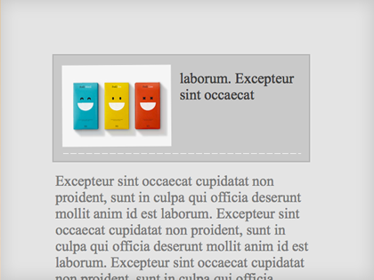

separata
En rigor no se cómo llamar a esto, yo lo llamo separata. Éramos jóvenes e inconscientes y teníamos mucho html que malgastar.
La teoría: Antes de cerrar el contenedor insertar un elemento de bloque con un clear: both para "romper" por debajo del elemento flotado, y todo solucionado.
.separata {
display: block;
clear: both;
height: 1px;
overflow: hidden;
visibility: hidden;
}
En mi caso siempre se lo trataba de aplicar a un hr o directamente hacía un override de los hr. ¿He dicho que era joven?
Si antes hemos dicho que era genial trabajar con el html justo y necesario el hecho de añadir elementos sólo para ajustar este tipo de problemas no entra dentro de nuestros planes. Pero yo lo tengo que contar :)
El ejemplo lo puedes ver por aquí.